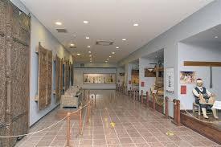

gezin · görün · keşfedin
"Şehzadeler Kenti" olarak anılan Amasya, binlerce yıllık köklü geçmişiyle Anadolu'nun en özel ve kadim duraklarından biridir. Coğrafi olarak Karadeniz Bölgesi'nde yer alsa da; iklimi, verimli toprakları ve kültürel dokusuyla İç Anadolu'nun karakteristik özelliklerini taşıyan bir vadidir.
Tarihin en önemli coğrafyacılarından Strabon'un doğum yeri olan bu kadim kent, Yeşilırmak'ın hayat verdiği eşsiz bir doğaya sahiptir. Hititlerden Roma'ya, Selçuklulardan Osmanlı'ya kadar pek çok uygarlığa ev sahipliği yapmıştır.
Cumhuriyet tarihimizde de müstesna bir yere sahip olan Amasya, Milli Mücadele ateşinin en güçlü yandığı, Mustafa Kemal Atatürk'ün kurtuluş meşalesini güçlendirdiği sembol bir şehirdir.
Yüzölçümü: 5.701 km²
Nüfus: 335.494
Rakım: 1.150 m
Trafik Kodu: 05
Alan Kodu: 0358
İlçeler: Göynücek, Gümüşhacıköy, Hamamözü, Merzifon, Suluova, Taşova
İklim: Karadeniz ile kara iklimi arasında geçiş iklimi hüküm sürer.
Harşane Dağı üzerinde, denizden 700 metre yüksekte konumlanan tarihi kale. Pontus Kralı Mithridates dönemine dayanan yapı, dört kapısı ve yeraltı yoluyla ziyaretçilerini büyüler.
Şehir merkezine 3,3 km uzaklıkta, kayaya oyulmuş anıtsal bir mezar. Güneş vurduğunda cephesinin parlamasından dolayı "Aynalı Mağara" adını almıştır.
Roma döneminde inşa edilen, dört yüksek kemerli tarihi köprü. Yeşilırmak'ın yükselen yatağına gömülmesiyle kemerlerin üst kısımları görünür kalmış, halk "Alçak Köprü" adını vermiştir.
Denizden 800 metre yüksekte, zümrüt yeşili suları ve çevresindeki ormanlarla doğa yürüyüşü ve kamp için ideal bir doğal set gölü.

Amasya Arkeoloji ve Mumya Müzesi veya Amasya Müzesi, 1958 yılında Amasya'da kurulmuş etnografya, arkeoloji ve mumya müzesidir. Türkiye'de mumya bulunan ender müzelerden birisidir. Müze bahçesindeki I. Mesud türbesinde sergilenen XIV. yüzyıla ait mumyalar, müzenin en ilgi çeken bölümlerindedir.
Türkiye'nin ilk ve tek Aşıklar Müzesi. Ferhat ile Şirin, Leyla ile Mecnun, Kerem ile Aslı ve Romeo-Jüliet'in aşk hikâyeleri burada yaşatılmaktadır.
Ferhat, dönemin en ünlü nakkaşlarından biriydi. Mehmene Banu Sultan, kız kardeşi için konakta bir oda süslettirmek istedi ve Ferhat'ı çağırdı. Ferhat işi ustalıkla yaparken Şirin'i gördü ve ona âşık oldu.
Şirin'i ailesinden istedi fakat Mehmene Banu Sultan vermek istemedi. Bir şart öne sürdü: "Amasya'nın dağlarını deler şehire içme suyu getirirsen sana Şirin'i veririm." Ferhat'taki aşk güce dönüştü ve dağları delmeye başladı.
Neredeyse şehire su gelecekken Mehmene Banu Sultan, ninesini Ferhat'a göndererek Şirin'in öldüğünü söyletti. Bu acıyı duyan Ferhat, elindeki külüngi havaya fırlattı; külüng başına geldi ve Ferhat hayatını kaybetti. Haberi alan Şirin de kayalıklardan kendini bıraktı.
"Her bahar mevsimi birinin mezarında kırmızı, diğerinin mezarında beyaz gül açar..."
Akdağ, Tavşan Dağı, İnegöl Dağı, Kocacık Tepesi, Kırklar Dağı ve Ferhat Dağı ilin önemli yükseltileridir.
Sulama amaçlı gölet ve barajlar ile sulanan verimli ovalara sahip olan il, Borabay Gölü'ne de ev sahipliği yapmaktadır.
Yeşilırmak ve göletlerde yayın, sazan, turna, levrek ve pullu gibi balık türleri bulunmaktadır.
İklim: Yazları kara iklimi kadar kurak değil, kışları Karadeniz iklimi kadar ılıman değil — ikisi arasında dengeli bir geçiş iklimi hüküm sürer.